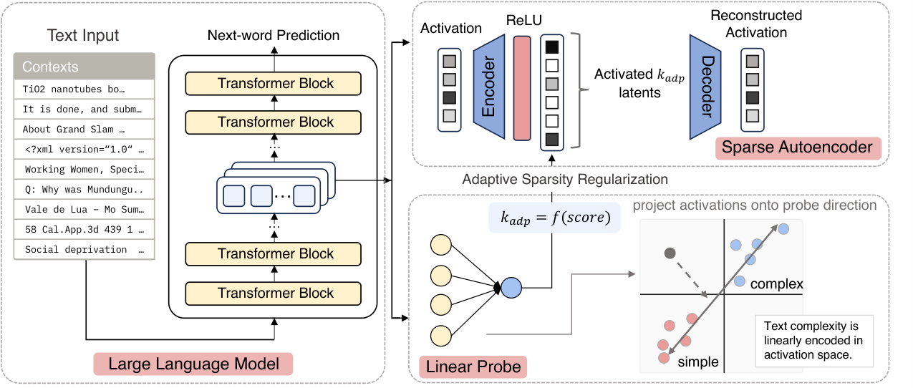
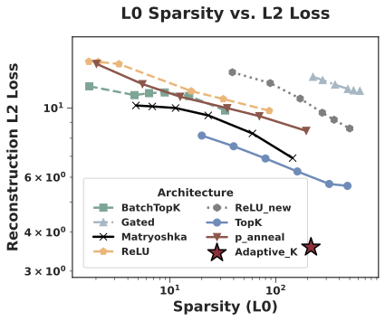
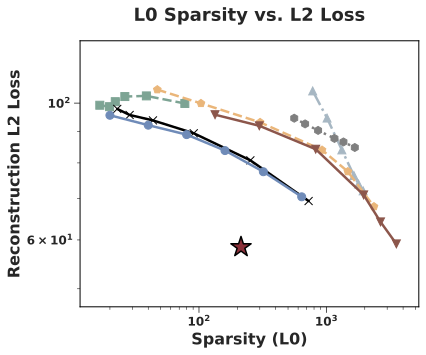
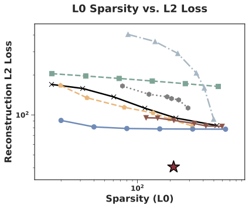
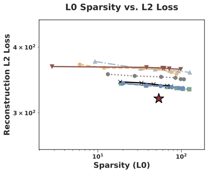
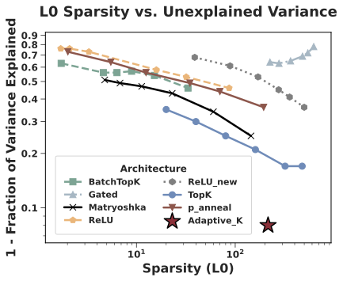
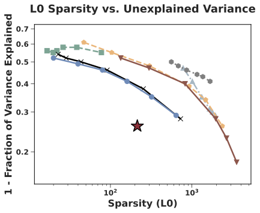
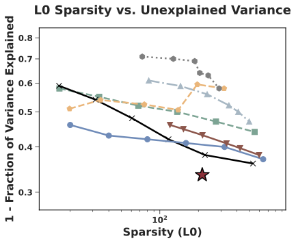
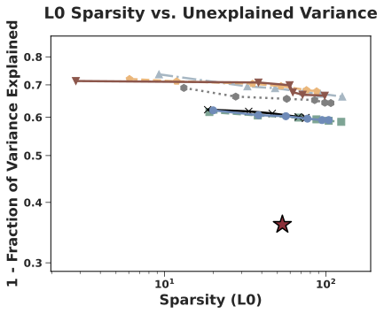

AdaptiveK: Complexity-Driven Sparse Autoencoders for Interpretable Language Model Representations
1 Zhejiang University, 2 University of Illinois Chicago, 3 The Chinese University of Hong Kong, Shenzhen

Overview
AdaptiveK adjusts the number of active sparse autoencoder features according to the semantic complexity of each input. A linear probe predicts complexity from a language model representation. The predicted score determines an input-specific sparsity budget, allocating more features to complex contexts and fewer to simpler ones.
Results
Reconstruction–Sparsity Trade-off
Figures 5 and 6 compare AdaptiveK with SAE baselines across a range of sparsity levels. They report L2 reconstruction loss and unexplained variance for Pythia-70M, Gemma-2-2B, Qwen-3-8B, and Phi-14B.


(a) Pythia-70M

(b) Gemma-2-2B

(c) Qwen-3-8B

(d) Phi-14B

(a) Pythia-70M

(b) Gemma-2-2B

(c) Qwen-3-8B

(d) Phi-14BBibTeX
@misc{yao2026adaptivek,
title={AdaptiveK: Complexity-Driven Sparse Autoencoders for Interpretable Language Model Representations},
author={Yao, Yifei and Zhang, Hanrong and Du, Mengnan},
year={2026},
eprint={2508.17320},
archivePrefix={arXiv}
}